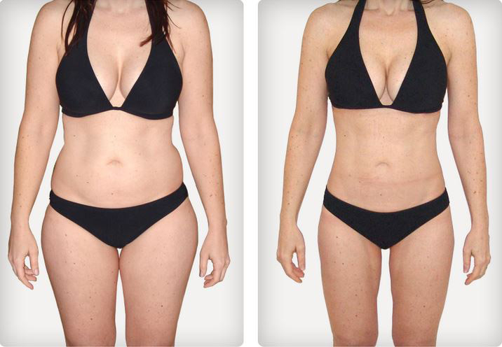

Wie ich um 34 kg abgemagert habe
Veröffentlicht , 19:51 | Autor: inga

Hallo, das bin wiederum ich, Anneliese! Ich möchte eine gute Nachricht über meinen kleinen Sieg über die Komplexe und Übergewicht teilen. Meine einfache Geschichte ist die Krankheit, die Scheidung mit dem Lieblingsmann und die erfolgreiche Überwindung dieser Schwierigkeiten.
Ich will damit beginnen, dass ich nach der Fehlgeburt starken Stress erlebt habe, und auf dem Hintergrund des Stresses hatte ich eine hormonale Störung und eine starke Depression . Während dieser Depression aß ich doppelt so viel als groß als gewöhnlich. Ich war immer vollschlank, deshalb begann ich rasend Gewicht zuzunehmen. Mein Ergebnis war traurig - 92 kg. Mein Mann bemühte sich zuerst, mich zu unterstützen, versuchte, mich aus der Depression herauszuziehen, aber später wurde ich ihm einfach piep egal.
Eines Tages sagte mein Mann, dass er keine solche minderwertige Frau braucht, die kein Kind gebären kann und dazu wie eine dicke Kuh aussieht. Sie können sich vorstellen, was es für ein Schlag für mich war: der geliebte Mann hat mich demütigt, hat verlangt, sich noch abscheulicher zu fühlen, und später hat uns einfach scheiden lassen.
Zuerst wollte ich schon das Leben wegwerfen, weil ich mir das Leben ohne meinen geliebten Mann und Kinder nicht vorstellten konnte. Meine Freundin hat mich zum Arzt mitgenommen, und der hat mir empfohlen, abzumagern, um den Hormonprofil zu normalisieren und das gesunde Kleinkind auszutragen...
Es kam Zeit sich in Angriff zu nehmen!

Die Worte meines ehemaligen Mannes über meine Unvollkommenheit gaben mir keine Ruhe, und als ich wieder einmal vor dem Spiegel stand, entsetzend von meinem schweren Körper, habe ich mich fest entschieden, dass ich mich verändern und ideal werden muss.
So habe ich die Verwandlung meines Körpers sofort begonnen: ich habe alle Übungen, den Yoga für Abmagerung, Tabletten versucht, 25. Bild, teuere Cremes, Anti-Zellulitis-Programme, harte Massagen und das alles war sehr kostspielig. ES FUNKTIONIERT ÜBERHAUPT NICHT. Hilft nicht. Nutzlos.
Ich wollte aufgeben, mein Körper gab auf keine Weise nach, trotz allem stand auf der Waage 92 kg... Ich wollte vor Hilflosigkeit weinen.
Also, ich habe diese Idee fast "auf die lange Bank" geschoben und auf diese Sache aufgepfiffen.
Ist die Abmagerung in kurzer Zeit wirklich real?!
Einmal habe ich im Internet gesurft und habe einen Blog gefunden, wo ein Mädchen auf wundersame Weise ZU HAUSE für 1 Monat um 22 kg mithilfe von einem () abgemagert hat. Natürlich war es für mich interessant und ich habe alles durch gelesen.
Zuerst konnte ich kaum am Effekt glauben – ich habe doch schon verschiedene Tabletten probiert, im Fernseher gibt’s so viel Werbung, aber nichts hilft... Aber dieses Mädchen ist im Internet ziemlich anerkannt, dazu legte sie erstaunliche Fotos "vor/nach" vor, und Ich habe mich entschieden, ihrem Rat zu folgen.
Also, ich habe diesen Komplex , in einigen Tage bekam ich am Postamt meine Sendung per Nachnahme. Ich packte aus, las die Anleitung, und begann aktiv zu verwenden.
Wie war das Ergebnis?
Die Verwendung ist ganz einfach ich nahm es ich nahm es einmal pro Tag. Ehrlich gesagt, hoffte ich nicht besonders auf dieses Mittel, und dachte nicht, dass es so wirksam sein würde. Aber allmählich bemerkte ich, dass meine Volumen zu verschwinden begannen.
Ich wartete noch eine Woche, und dann wollte ich mich wiegen.... Da fiel mir die Klappe runter! MEIN GEWICHT HATTE SICH UM 6 KG REDUZIERT!!! In 7 Tagen! Können Sie daran glauben??? Ich konnte nicht meinen Augen trauen, und wollte mich nochmals wiegen - 7 kg 200 g verschwunden , alles war richtig! Es war kein Fehler und kein Irrsinn! Ich konnte meine Freude nicht beschreiben. Zum letzten Mal freute ich mich so wahrscheinlich vor 20 Jahren :)
Ich nahm den Komplex weiter regelmäßig während 2 Monaten fort, und als ich mich nochmals wiegen wollte, wurde ich einfach überrascht - -34 KG IN 2 MONATEN!!! Ich habe sogar einige Male nachgeprüft – die Waagenzunge zeigte ständig 58 KG!
Auf der Arbeit, natürlich, fingen alle Kollegen sofort an, zu bemerken, dass ich das Gewicht rasend verlierte, und wollten alles wissen. Mein sehr sympathischer unverheirateter Kollege hat begonnen mich zu bewundern, er sagte, dass er immer meinen Mann beneidete: ich war für ihn schon immer klug und interessant, und jetzt auch noch so hübsch:)
Insgesamt hat sich mein Leben nach der Abmagerung verändert. Die Männer knien jetzt auf meinem Rock, Komplimente ringsherum. Und in der Tat ist es so angenehm.
Und wissen Sie, ich heirate bald. Ja-ja, meinen sympathischen Kollegen von der Arbeit. Und das ist nicht alles, wir warten schon auf neues Kind :) Dank der Reduktion des Gewichts hat mein Körper die hormonale Störung überwunden, und jetzt bereite ich mich vor, eine vollwertige Frau und Mutter in glücklich und in einer glücklichen und festen Familie zu werden, wo sich alle lieben und schätzen!
So ist es: dank meinem ehemaligen Mann, der mich verletzt und verlassen hat , habe ich die Krankheit, die Depression und überflüssige Kilos überwunden, und Jetzt bin ich glücklich, schlank und schön!!!
Ich bin so froh, dass alles geklappt hat. Gleichzeitig mit der Abmagerung habe ich verstanden, dass das Problem von vielen von uns uns darin besteht, dass die einfachsten Dinge uns unwirksam scheinen. Und die komplizierten Dinge, Dinge, wie zum Beispiel, Operationen - wirksam. Aber es ist nicht so. Das große Gewicht kann man in kurzer Zeit natürlich, schnell und in der sicheren Weise, ohne Diäten und der Übungen verlieren. Es ist geprüft! Übrigens, Mädchen, ich habe seit dieser Zeit kein Gewicht zugenommen, die Umfänge sind unverändert geblieben :)

Wer sich damit interessiert – ich habe die Bestellung auf dieser Webseite gemacht. Das ist die einzige zertifizierte Firma in der EU, die verkauft. In Bezug auf die Lieferung: Sie bekommen die Sendung per Nachnahme auf dem Postweg. Also, ist alles sicher und niemand wird Ihr kleines Geheimnis wissen.
Der Preis von ist genauso hoch wie 2 Kinokarten oder 1 Lebensmittelkauf. Sie sollen selbst bestimmen ob es viel oder wenig ist. Meiner Meinung nach sollte dieses wirksames Mittel doppelt so viel kosten!
So, ich hoffe, diese Information war Ihnen nützlich und ich hoffe auch, dass Sie endlich ihre gewünschten Größe und Gewicht in kürzester Zeit bekommen!





Bloger On-line


Und noch 327 ohne Avatar...